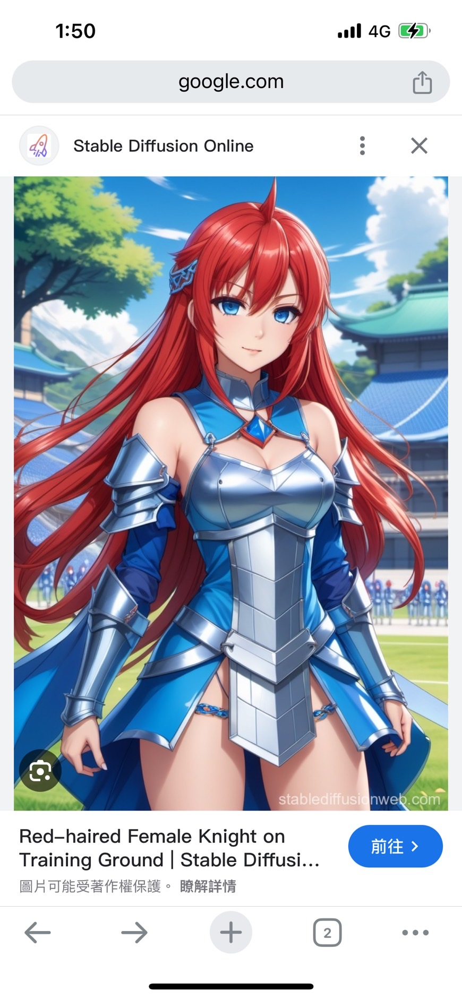

點擊上方的語言選單以切換語言
在許多遊戲和影視劇作品中，我們所見到的「中世紀」和「森林奇幻」世界，往往被一層厚重的浪漫化濾鏡所覆蓋。這種虛構的描繪，雖然引人入勝，卻與現實世界的嚴酷、日常需求，以及其歷史上真實存在的可怕陰暗面，存在著巨大鴻溝。
我們常看到公會木屋內陳設溫暖，酒桶滿溢，新鮮麵包、酒類、肉類、沙拉、南瓜和濃湯擺滿桌，彷彿能聞到誘人的酒香和麵包香。這些場景營造出舒適與豐饒的假象，令人心生嚮往。
實際上，中世紀的麵包多半粗硬且缺乏甜味。當時的房屋，特別是人群聚集的場所，衛生條件堪憂，通風不良，常常充斥著各種難聞的氣味，如口臭、體臭、汗臭、以及因缺乏完善的排污系統和個人衛生習慣而產生的排泄物惡臭。更為恐怖的是，惡劣的衛生條件和科學知識的匱乏，使得黑死病（鼠疫）等瘟疫能夠週期性地橫掃歐洲，造成數千萬人死亡，其規模和恐懼程度遠非遊戲中常見的「怪物入侵」能比擬。
遊戲和影視劇中的女性騎士或魔法師，通常外貌亮麗，身著刻意展現性吸引力的服裝，例如露肚臍、露胸、露大腿的盔甲或法袍。她們在戰場或冒險中依然保持優雅和吸引力。
男性騎士或魔法師也常被塑造成年輕帥氣、擁有清晰腹肌的形象，即便身穿盔甲，也可能故意打赤膊露出上半身。
在遊戲中，使用雙節棍、三節棍、流星鎚等特殊兵器的角色總是操作流利、百發百中，能以奇特的招式輕鬆擊敗敵人。
歷史上，女性擔任騎士的情況極為罕見。而無論男女，為了在戰場上保命，盔甲的唯一且首要目的就是提供最全面的身體保護。任何暴露的部位都是致命的弱點。真正的盔甲是厚重、笨拙，旨在完全覆蓋和保護身體的，與性吸引力完全無關。此外，在中世紀及早期現代，女性若稍有異常或掌握某些知識（如草藥學），甚至可能引來動輒冤枉人的「獵巫行動」，被指控為邪惡，遭受酷刑乃至處死，其恐懼和不公義遠超虛構作品中的魔法對決。
更重要的是，像雙節棍、三節棍、流星鎚這類難以操控的武器，在現實中往往在還沒命中敵人時，使用者就先因操作不當而擊傷自己，從而迅速結束戰役。（詳情請見首頁中，鎧甲勇士的設計廢案的影片與姑娘表演雙節棍的影片）
電影中如葉問般「一打十」並在刀光劍影中屹立不倒的情節，也純屬戲劇效果。在現實的武術對練中，即使有軟墊保護且控制力道，操作不當仍可能造成重傷甚至死亡，更別提電影中那種以置對方於死地為目的的真實戰鬥了。
奪刀的部分就更不用提了，可以試想一下你女友用手指快速戳你的情況，哪怕你是反應靈敏、受過訓練的格鬥家，人類的反應速度極限也就在那，根本擋也擋不了。然後把同樣的情況換成對方拿刀捅你，你必死無疑。因此遇到手持利器的人時，逃跑才是唯一方法。
在遊戲和影視劇中，精靈、武俠或其他英雄人物在森林中長居，似乎能超脫人類社會的紛爭，過著與世無爭、舒適寫意的生活。他們長相艷麗、總能輕易找到食物、水源，且衣著整潔，從不為生理需求所困擾。
野外求生實境秀向我們揭示了真實的野外生存有多麼艱難。遠離人類社會的鬥爭，並不代表沒有了鬥爭，而是轉變為與自然、飢餓、寒冷、疾病、野獸、以及自身生理極限的嚴酷搏鬥。尋找安全飲水、可食用的植物、搭建庇護所、生火、保持基本衛生（包括如何在沒有現代設施的情況下處理排泄物，避免污染水源和引起疾病），都是耗時耗力的巨大挑戰。體力和精神的雙重考驗，讓「森林中的隱士生活」顯得異常狼狽和骯髒，而非浪漫優雅。
這種對歷史、自然和人體極限的藝術加工，雖然為我們提供了豐富的娛樂體驗和廣闊的想像空間，但也提醒著我們，虛構作品為了敘事和審美目的，會刻意忽略現實的複雜性與不便之處。其中，對排泄等基本生理需求的迴避、對黑死病肆虐和獵巫恐懼等歷史創傷的避而不談，以及對武器操作和個人武力脫離現實的浪漫化，尤其突顯了虛構與現實之間存在一道深刻的鴻溝。區分遊戲與現實，理解其中巨大的反差，能讓我們更客觀地看待這些迷人的幻想世界。